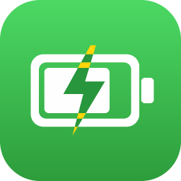

SmartCharge
Giữ pin ở mức bạn chọn khi máy cắm sạc cố định — tới mức thì pin nghỉ, máy chạy thẳng bằng nguồn sạc. Cho iPad / iPhone chạy iOS 6 đã jailbreak.
Bản 1.1.0Nguồn Cydia: https://itovn.github.io/SmartCharge/cydia/
Giao diện
 Cài đặt › SmartCharge: trạng thái sống, mức giữ
Cài đặt › SmartCharge: trạng thái sống, mức giữ Thông báo khi xả xong, sạc không đủ, pin nóng
Thông báo khi xả xong, sạc không đủ, pin nóngTính năng
Giới hạn mức sạc, pin nghỉChọn mức giữ 50–100 %. Tới mức thì ngừng sạc: pin nghỉ, máy chạy thẳng bằng nguồn sạc; pin tụt quá khoảng sạc lại thì sạc tiếp. Cắm sạc lúc pin cao hơn mức giữ thì máy chạy pin về mức.
Lịch xả pinHằng ngày / tuần / tháng: máy chạy bằng pin dù vẫn cắm sạc, tới mức đáy thì tự sạc về mức giữ — số % hiển thị chính xác hơn. Máy ngủ đúng giờ thì tự thức dậy; lỡ giờ (tắt máy) thì xả bù trong 24 giờ. Tuỳ chọn hiệu chuẩn: sạc đầy 100 %, nghỉ 30 phút rồi về mức giữ.
Bảo vệ pinNgừng sạc khi pin nóng (mặc định ≥ 42 °C, sạc lại khi ≤ 38 °C), giới hạn dòng sạc; pin ≤ 10 % lúc đang xả thì sạc lại ngay. Lần đầu cắm sạc tự kiểm tra driver — máy chưa hỗ trợ thì tự tắt điều khiển.
Sạc yếu, sạc dự phòngĐo công suất thật của nguồn sạc, báo «Sạc không đủ» khi dây / cổng / cục sạc làm tụt áp (pin tự bù phần thiếu). Lúc xả, ngắt nguồn theo nhịp để sạc dự phòng không tự tắt.
Ký hiệu cạnh % pinThanh trạng thái cho biết SmartCharge đang làm gì — ở màn hình chính, màn khoá và trong mọi app.
Thông báo, ActivatorBáo xả xong, cổng sạc mất điện giữa lúc xả, sạc không đủ, pin nóng. Activator: bật / tắt, sạc đầy lần này, xả ngay, huỷ.
Tự cập nhật, hai thứ tiếngTự báo khi có bản mới và tự cài — chỉ cài gói có chữ ký số của người phát hành. Tiếng Việt / English theo ngôn ngữ máy (hoặc chọn tay).
Ký hiệu trên thanh trạng thái
78%→80 đang sạc tới 80 %
80%‖ giữ mức, pin nghỉ
65%↓30 đang xả tới 30 %
78% 43° ngừng sạc vì pin nóng
9%! pin quá thấp — đang sạc lại
80%‖ giữ mức, pin nghỉ
65%↓30 đang xả tới 30 %
78% 43° ngừng sạc vì pin nóng
9%! pin quá thấp — đang sạc lại
Cần bật hiện phần trăm pin (Cài đặt chung › Sử dụng). Tắt ký hiệu: Cài đặt › SmartCharge › Khác.
Cài đặt
1. Thêm nguồn CydiaMở Cydia → Nguồn → Sửa → Thêm, nhập
https://itovn.github.io/SmartCharge/cydia/ (hoặc chạm nút «Thêm nguồn vào Cydia» ở trên).2. Cài SmartChargeTìm «SmartCharge» → Cài đặt → Xác nhận, xong bấm «Restart SpringBoard».
3. Chọn mức giữCài đặt › SmartCharge: mặc định giữ 80 %, sạc lại khi ≤ 75 %, xả hằng tháng (ngày 1, 19:00) xuống 30 %.
Cập nhật: SmartCharge tự báo khi có bản mới (hoặc Cài đặt › SmartCharge › Kiểm bản mới). Gỡ gói thì máy sạc bình thường ngay.
Máy cắm cố định nên dùng sạc cắm tường: sạc dự phòng hay tự tắt khi máy rảnh lúc đang giữ mức.
Máy chạy được
iOS 6.0 – 6.1.x đã jailbreak (cần MobileSubstrate, PreferenceLoader; Activator không bắt buộc). Đã thử trên iPad 4 (iOS 6.1.3). Máy khác: lần đầu cắm sạc SmartCharge tự kiểm tra driver, không hợp thì tự tắt và báo.
Mã nguồn
Mã nguồn mở — GPL-3.0github.com/itovn/SmartCharge · daemon C, trang Cài đặt và phần SpringBoard Objective-C, công cụ cập nhật Rust (rustls).